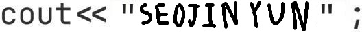
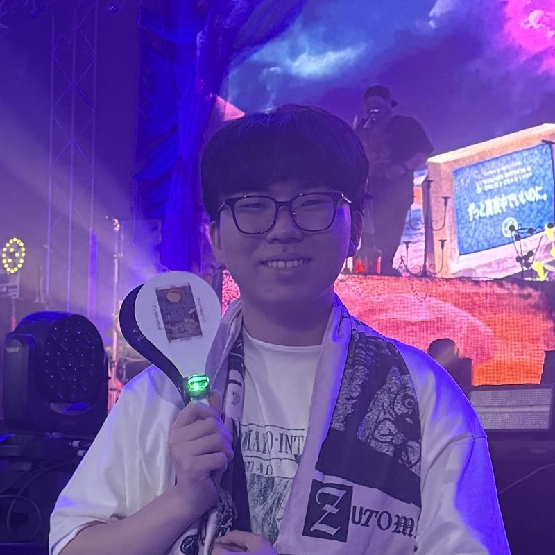
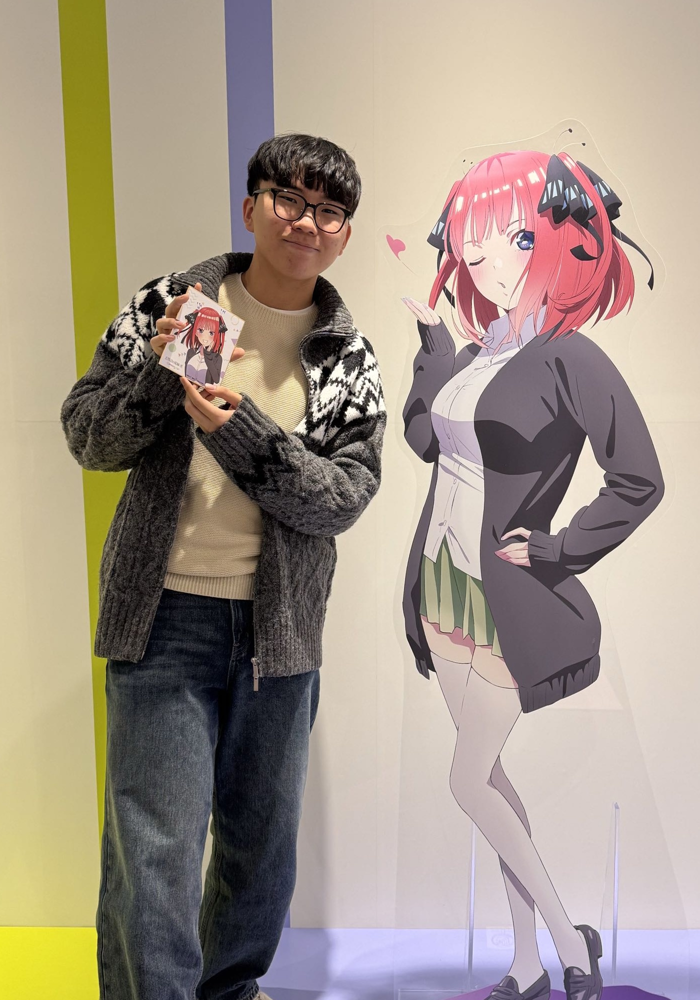

My Projects
A selection of my range of projects

Game Programmer / Tech Lead

C++, C#, C, Python
Custom C++/OpenGL Engine, Unity, Unreal
Solution-Oriented, Adaptable, Growth Mindset, Ownership
Student Game Programmer Seojin Yun
I am a passionate Game Programmer and Tech Lead pursuing a B.S. in Computer Science in Real-Time Interactive Simulation at DigiPen Institute of Technology. I have a strong foundation in C/C++ and experience developing custom game engines using OpenGL and Raylib, as well as commercial engines like Unity and Unreal.
As a Tech Lead across multiple collaborative projects, I focus on establishing solid technical foundations, optimizing workflows, and ensuring maintainable software architecture. I thrive in cross-functional teams, bridging the gap between design, art, and engineering.

A selection of my range of projects
Tech Lead, Matcha Lab Sep 2025 - Present Daegue, Korea Directing the end-to-end engineering lifecycle for a custom C++/OpenGL engine project, overseeing architectural decisions and system integration. Championed the adoption of data-driven design (JSON), empowering non-technical team members to iterate on complex recipe and level data. Managing project-wide technical debt through proactive refactoring and establishing automated testing protocols.
Tech Lead, Matcha Time Mar 2025 - Jun 2025 Daegue, Korea Mentored a 4-person technical and design team, conducting regular code reviews to maintain high software quality and optimize runtime performance. Implemented an Agile-inspired development process, utilizing task-tracking tools to manage feature backlogs. Authored technical documentation for core systems allowing designers to balance gameplay variables independently.
Tech Lead, Matcha Oct 2024 - Dec 2024 Daegue, Korea Spearheaded the technical foundation for a 3-person cross-functional team, defining the initial software architecture and project milestones. Streamlined the asset pipeline between art and tech by establishing clear naming conventions and automated export workflows. Facilitated weekly technical syncs and resolved merge conflicts in Git.
Tech Lead, ResCook Sep 2025 - Present Daegue, Korea Developed a 2D dungeon-themed cooking simulation game using a custom C++/OpenGL engine. Spearheaded the technical and creative direction for a 4-person lead team. Engineered a data-driven stage loading and recipe management system using JSON. Designed and optimized the engine's fundamental infrastructure including the game loop, input handling, and 2D rendering pipeline.
Tech Lead, Nano Clash Mar 2025 - Jun 2025 Daegue, Korea Developed a fast-paced, rogue-lite arena shooter using a custom game engine built on Raylib. Directed a cross-functional team of four. Engineered a sophisticated dynamic tool and item system supporting up to six simultaneous equipment slots. Resolved CPU-bound bottlenecks by refactoring the asset loading pipeline.
Tech Lead, Forest NAGA Oct 2024 - Dec 2024 Daegue, Korea Developed a 2D top-down tower defense game using C++ and the Raylib library. Spearheaded the technical direction for a 3-person cross-functional team. Architected and implemented core game systems including an FSM-based game loop and resource-driven summoning logic. Led project-wide code integration and debugging.
Programmer, DeckedMaze Jul 2023 - Oct 2023 Daegue, Korea Developed a 2D roguelike deck-building game using Unity. Engineered a scalable card and ability system using Scriptable Objects. Implemented a persistent data management system using JSON. Collaborated closely in a 2-person engineering team to architect and implement core gameplay logic.
Game Jam Team Lead, DigiPen-Keimyung University Daegue, Korea Led a 2-person rapid development team for a game jam, successfully delivering a fully functional prototype within a condensed development window. Streamlined project scope by prioritizing core mechanics and essential assets. Facilitated real-time problem solving and technical coordination.
Bachelor of Science in Computer Science in Real-Time Interactive Simulation May 2025 DigiPen-Keimyung University | Daegue, Korea GPA: 3.02/4.0 Relevant Courses: Computer Graphics I&II, Data Structures, Advanced C/C++, Operating Systems, Game Implement Techniques, Linear Algebra, High-level Programming I&II